This function creates a Natural/Regenerated signal vs. time (NR(t)) plot as shown in Steffen et al. 2009
plot_NRt( data, log = FALSE, smooth = c("none", "spline", "rmean"), k = 3, legend = TRUE, legend.pos = "topright", ... )
Arguments
| data | list, data.frame, matrix or RLum.Analysis (required): X,Y data of measured values (time and counts). See details on individual data structure. |
|---|---|
| log | character (optional):
logarithmic axes ( |
| smooth | character (optional):
apply data smoothing. Use |
| k | integer (with default): integer width of the rolling window. |
| legend | logical (with default): show or hide the plot legend. |
| legend.pos | character (with default): keyword specifying the position of the legend (see legend). |
| ... |
Value
Returns a plot and RLum.Analysis object.
Details
This function accepts the individual curve data in many different formats. If
data is a list, each element of the list must contain a two
column data.frame or matrix containing the XY data of the curves
(time and counts). Alternatively, the elements can be objects of class
RLum.Data.Curve.
Input values can also be provided as a data.frame or matrix where
the first column contains the time values and each following column contains
the counts of each curve.
How to cite
Burow, C., 2020. plot_NRt(): Visualise natural/regenerated signal ratios. In: Kreutzer, S., Burow, C., Dietze, M., Fuchs, M.C., Schmidt, C., Fischer, M., Friedrich, J., Riedesel, S., Autzen, M., 2020. Luminescence: Comprehensive Luminescence Dating Data Analysis. R package version 0.9.8. https://r-luminescence.org
References
Steffen, D., Preusser, F., Schlunegger, F., 2009. OSL quartz underestimation due to unstable signal components. Quaternary Geochronology, 4, 353-362.
See also
Author
Christoph Burow, University of Cologne (Germany) , RLum Developer Team
Examples
## load example data data("ExampleData.BINfileData", envir = environment()) ## EXAMPLE 1 ## convert Risoe.BINfileData object to RLum.Analysis object data <- Risoe.BINfileData2RLum.Analysis(object = CWOSL.SAR.Data, pos = 8, ltype = "OSL") ## extract all OSL curves allCurves <- get_RLum(data) ## keep only the natural and regenerated signal curves pos <- seq(1, 9, 2) curves <- allCurves[pos] ## plot a standard NR(t) plot plot_NRt(curves)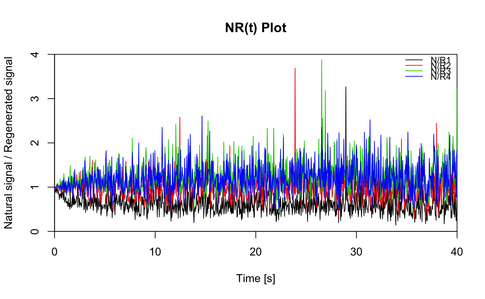## re-plot with rolling mean data smoothing plot_NRt(curves, smooth = "rmean", k = 10)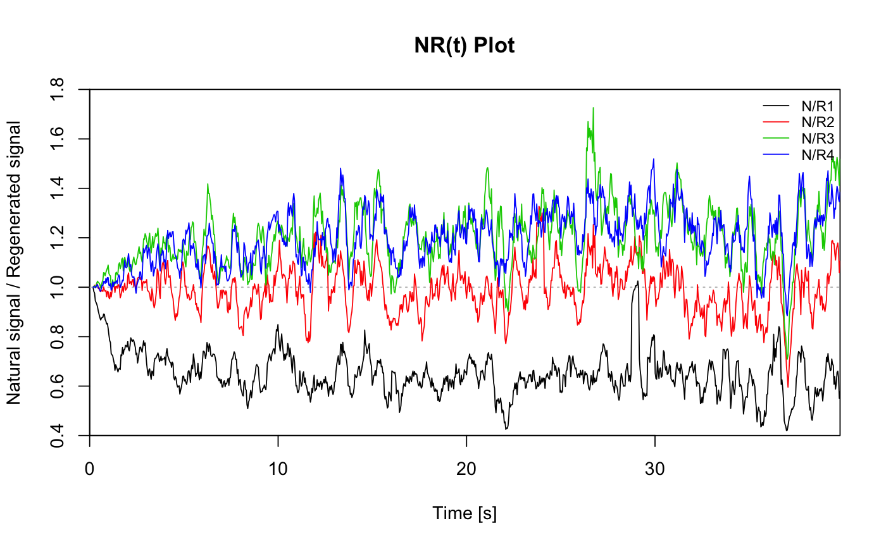## re-plot with a logarithmic x-axis plot_NRt(curves, log = "x", smooth = "rmean", k = 5)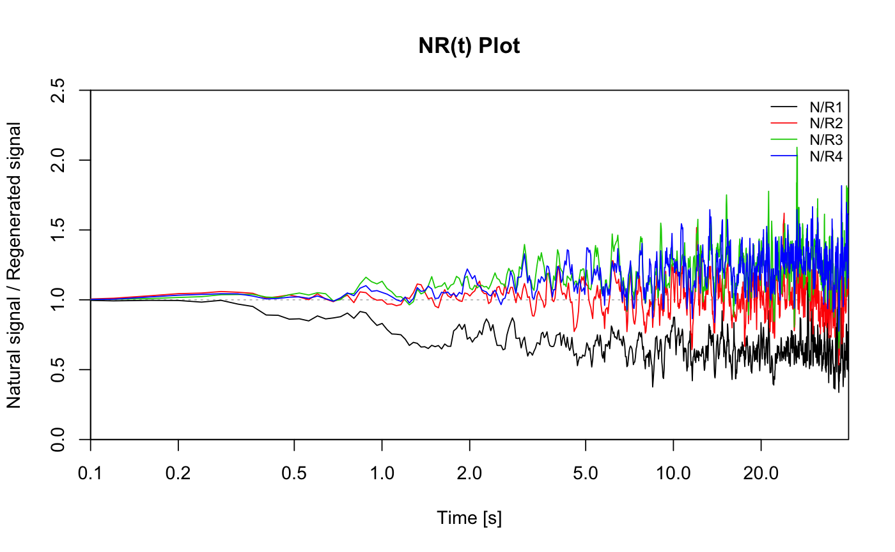## re-plot with custom axes ranges plot_NRt(curves, smooth = "rmean", k = 5, xlim = c(0.1, 5), ylim = c(0.4, 1.6), legend.pos = "bottomleft")## re-plot with smoothing spline on log scale plot_NRt(curves, smooth = "spline", log = "x", legend.pos = "top")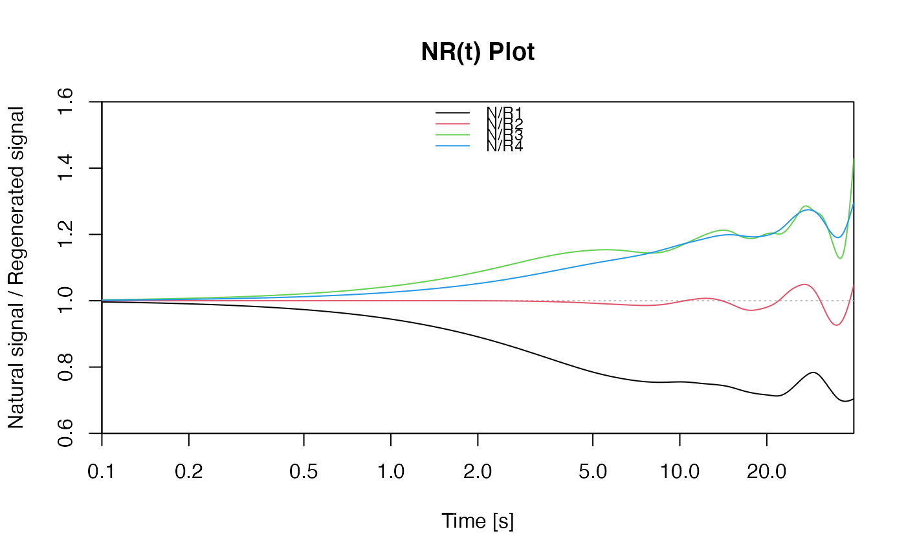## EXAMPLE 2 # you may also use this function to check whether all # TD curves follow the same shape (making it a TnTx(t) plot). posTD <- seq(2, 14, 2) curves <- allCurves[posTD] plot_NRt(curves, main = "TnTx(t) Plot", smooth = "rmean", k = 20, ylab = "TD natural / TD regenerated", xlim = c(0, 20), legend = FALSE)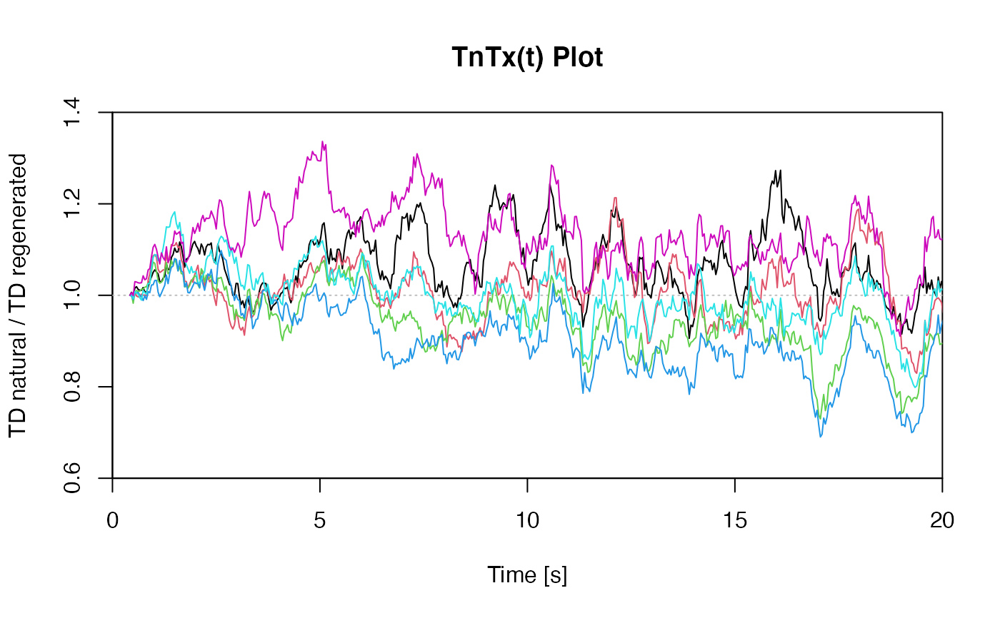## EXAMPLE 3 # extract data from all positions data <- lapply(1:24, FUN = function(pos) { Risoe.BINfileData2RLum.Analysis(CWOSL.SAR.Data, pos = pos, ltype = "OSL") }) # get individual curve data from each aliquot aliquot <- lapply(data, get_RLum) # set graphical parameters par(mfrow = c(2, 2)) # create NR(t) plots for all aliquots for (i in 1:length(aliquot)) { plot_NRt(aliquot[[i]][pos], main = paste0("Aliquot #", i), smooth = "rmean", k = 20, xlim = c(0, 10), cex = 0.6, legend.pos = "bottomleft") }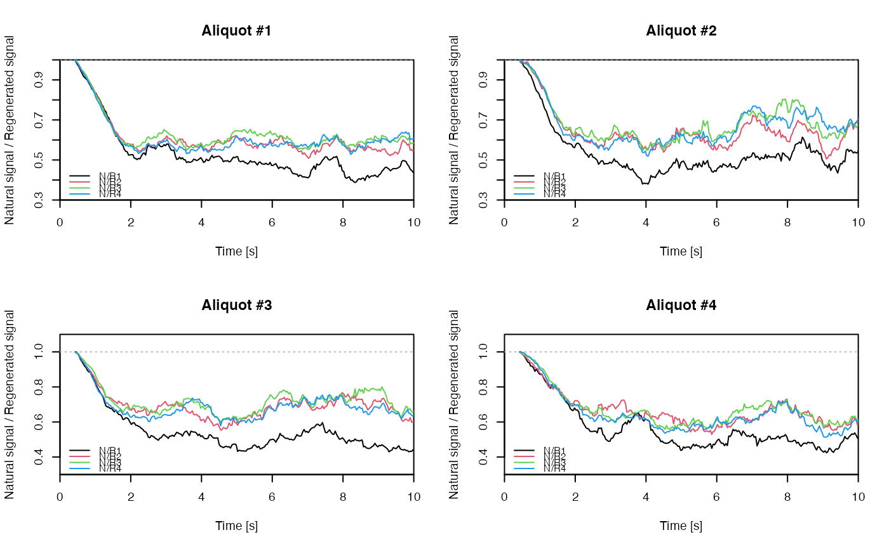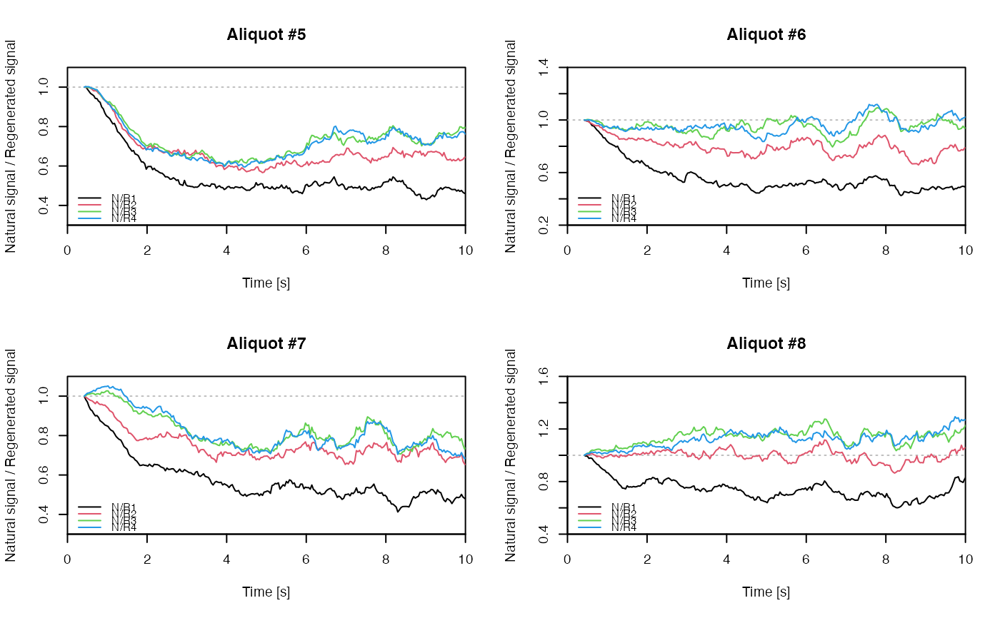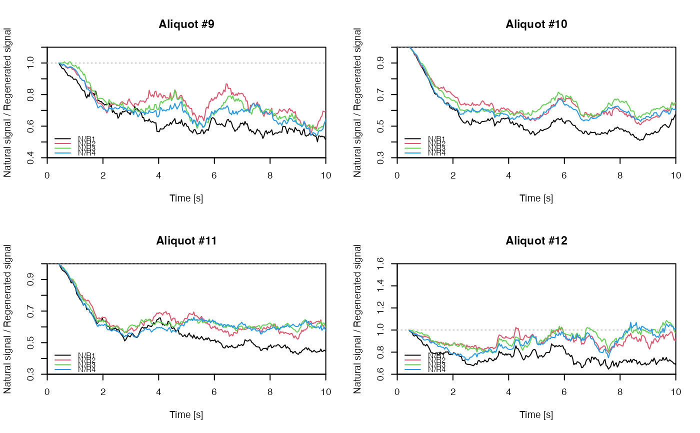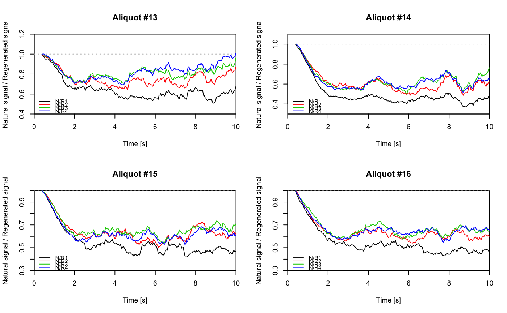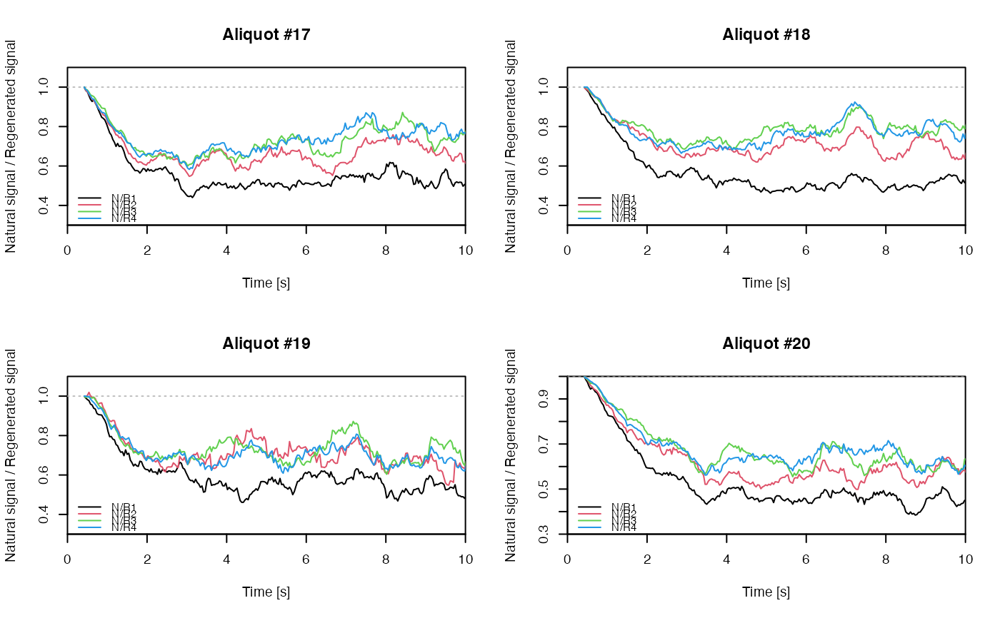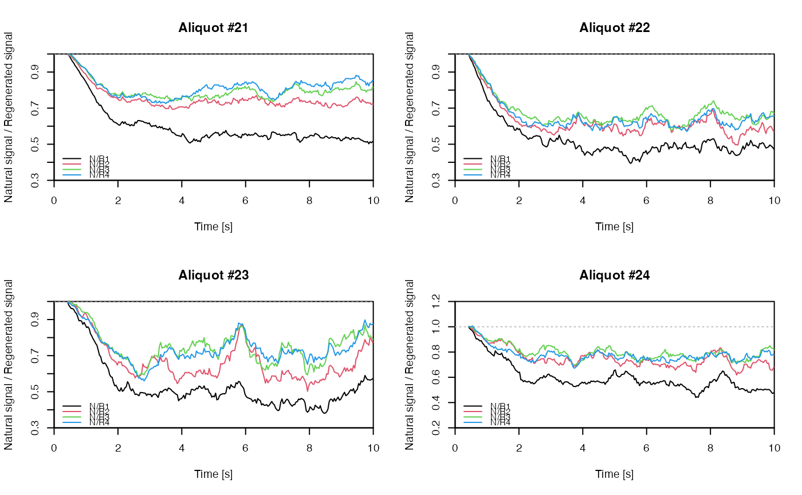